Linux Networking ELI5 — Part 2, IP, NAT & DHCP
Hey everyone! In this article we are continuing our Linux Networking journey from where we left off. Previously, we made a simple introduction to networks, interfaces and basic Linux commands. Now, here in this article we will go deeper into the networking itself and talk about IP addresses, NAT, DHCP and more.
If you haven’t read the Part-1, I highly encourage you to give it a quick look. Most of the stuff here will make a lot more sense if you know about networks and interfaces.
Navigate to Part 1 — Networks & Interfaces
Navigate to Part 2 — IP, NAT & DHCP
Navigate to Part 3 — Ports, TCP/UDP & Firewalls
Navigate to Part 4 — Minecraft & HTTP Server
TLDR;
IP Address: Unique set of characters that is used to identify computers in a network
IPv4 (protocol): A version of the IP address (legacy)
IPv6 (protocol): A version of the IP address (modern)
Private IP Address: An IP address used inside a closed network (ex. home, company)
Public IP Address: An IP address used outside the closed network (ex. internet)
NAT: A solution method that connects two networks via private/public IP addresses
Ping: A tool that send packets to the destination IP address (used for testing)
Static IP Configuration: A term for manually assigning IP address
Dynamic IP Configuration: A term for automatically assigning IP addressess
DHCP: A server that handles dynamic IP configuration inside a network
The Setup
Since networking requires multiple devices connected to each other, I have setup an example network. This way I can give better visual examples and help you in this journey.

My Basic Network Setup
I have two local machines that are connected to each other via my home router. One machine is Apple’s Macbook Pro running macOS Ventura 13.1 and the other one is my faithful Raspberry Pi 4b running Ubuntu Server 22.04.
I also have an Oracle Cloud machine running Ubuntu Server 22.04 same as my Raspberry. I hid it’s public IP address due to privacy and security concerns.
Without further ado, let’s start by talking about IPs.
IP Address
Now, we have all these cool networks out there; local networks, private networks and public networks. However, before we can join into them and start having fun, we first need something very important. An IP address.
IP addresses are unique set of characters that is used to identify computers in a network. We can think of them as our username, national ID or home address.
IP Addresses Can be Compared to Mail Address — Source: unsplash.com by Oleksandr Gamaniuk
Currently there are two types of IP addresses. One is called IPv4 and other is IPv6. In the old networking times, people used a simple IP address that is the IPv4. However, this old protocol only supports around 4.3 billion (2^32) different addresses.
You can see that the IPv4 is a major problem in 2023, because there are WAY more than 4.3 billion devices out there connected to the Internet (approx. 14 billion devices). So, how can everything still work and not crash?
There are two answers to that question: IPv6 and NAT.
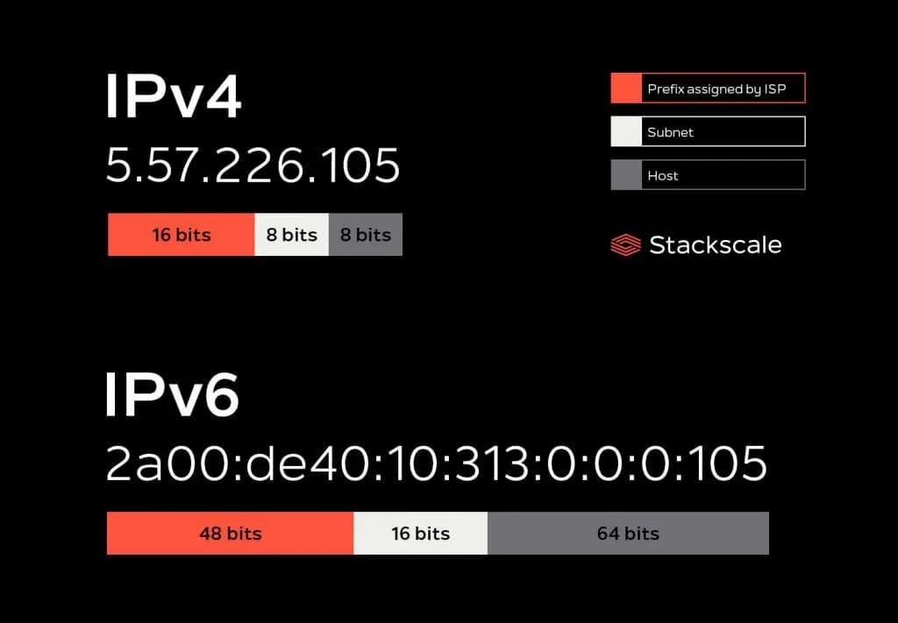
Example IP Address’ (IPv4 abd IPv6) — Source: stackscale.com
IPv6 is a 25 years old protocol that is meant to replace the legacy IPv4. You can see from the above picture that it is much bigger (32 bit vs 128 bit) and thus able to support 340 trillion trillion trillion (2^128) devices. Yes, you read that right! It’s practically unlimited.
IPv6 solves most of our problems, but how come everyone still uses IPv4? There are two main reasons.
- Migrating from IPv4 to IPv6 is expensive (time&money). For most companies and people it is not worth the switch. NAT is “good enough”.
- Most network tools and hardwares are either not supported or optimized for IPv6 yet.
Although the IPv4 (with the help of NAT) is good enough, the migration to IPv6 is inevitable and is going to happen whether we like it or not. (Dread it. Run from it. IPv6 still arrives.)
Most People Hate IPv6, But it is Inevitable! Source: forwardingplane.net
Okay, we have mentioned NAT enough already. Let’s learn what it’s all about.
NAT
Network Address Translation (NAT) is basically a way for devices on a local network (like your home network) to share a single public IP address (the IP address given to you by your ISP) to connect to the internet.
Imagine you have a router at home and 3 devices (iPhone, laptop and smart TV) that want to access the internet. Without NAT, each device would need its own IP address, which would be expensive and impractical (remember IPv4?). And since we are not using IPv6, yet, we must use NAT to help us.
Basically, NAT allows multiple devices on a network to share a single public IP address and access the internet, while keeping their private IP addresses hidden. The below picture perfectly illustrates what NAT is.
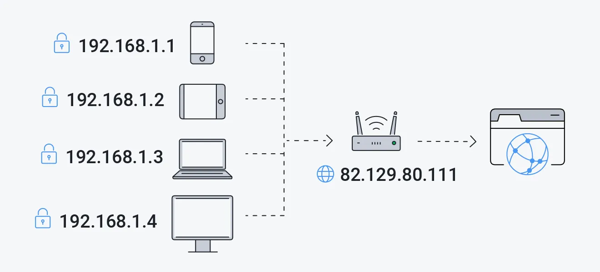
Private IP vs Public IP — Source: avg.com
To better understand what NAT is, we should also learn about two new things that are already mentioned before: private and public IP addresses.
Private IP Address
This kind of IP addresses are used to identify you in a local/private network. For example; your devices that are connected to the home Wi-Fi. Or your work computer that is connected to the company’s network.
Private IP addresses are not globally unique. Meaning, your iPhone can use the same private IP at your home and at your friend’s home.
Most private IP addresses uses the following IPv4 format: 192.168.x.x
All devices in a local/private network uses each others’ private IP address to talk to each other (this includes your home router/modem). Let’s give a practical example using my network setup.
I have two machines (Macbook and Raspberry Pi) that are connected to via my home router. So, in total there are three network devices and each of them have unique private IP addresses. Check out the below image.
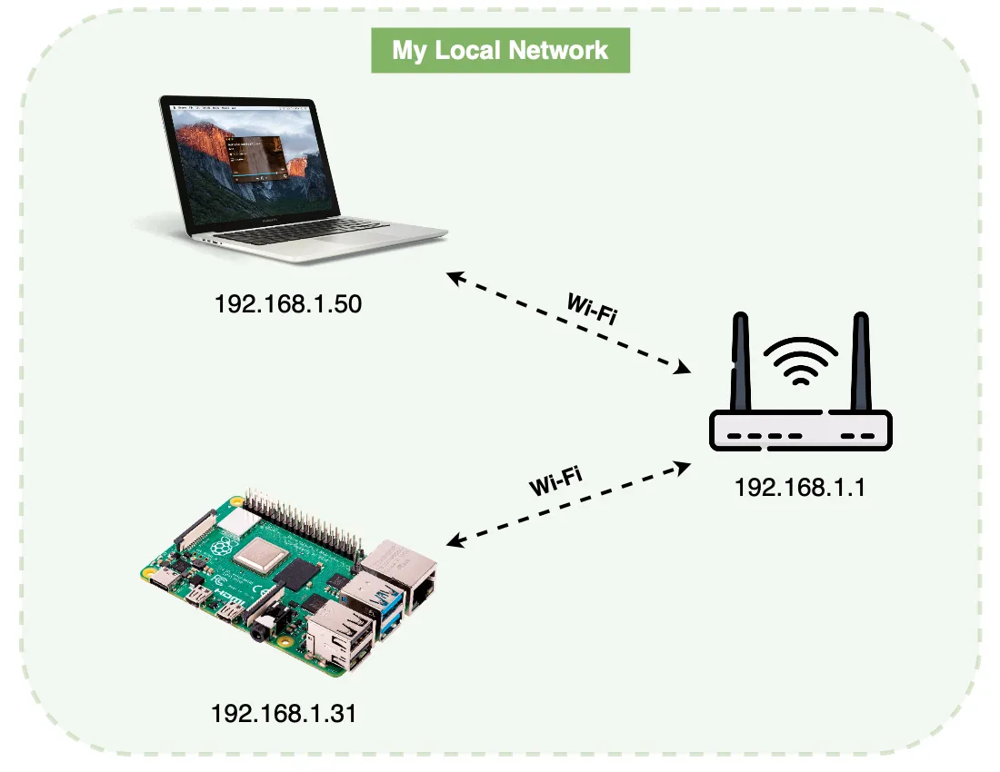
My Local Network Setup
You can see that each of my devices have their own private IP addresses. Even my router has one! That’s because it still is a device in a network and needs to have an IP to talk to others.
Most home routers and modems have their private IP set to 192.168.1.1. But, you can still check your router IP using Linux commands (more on this later)
If you want to learn your own private IP in Linux, you can do so using the below command.
# I can choose not to specify <INTERFACE>, but then all interfaces will be displayed
$ ip addr show <INTERFACE>
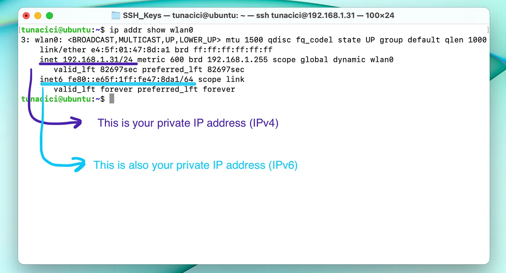
Since I’m using the wlan0 network interface, I need to look for it’s private IP. I have two private IPs: IPv4 and IPv6.
If I want to learn my IPv4 (192.168.1.31) then I need to look at ‘inet’
Or If I want to learn IPv6 (fe80::e65f:1ff:fe47:8da1) I need to look at ‘inet6’
Public IP Address
This IP address is used on, you guessed it, public networks (AKA the Internet). This one is special because it identifies YOU on the whole public network. Meaning, everyone in the network can use this address to ‘communicate’ with you.
When using NAT, your public IP address does not point directly to you. It points to your router or your NAT device.
This is important as NAT allows multiple devices to share the same public IP address.
Public IP addresses are given to you by either your ISP or your company’s IT department. Since almost everyone uses the IPv4, there are only a handful amount of public IP addresses. This makes them valuable and opens a whole new market for earning money.
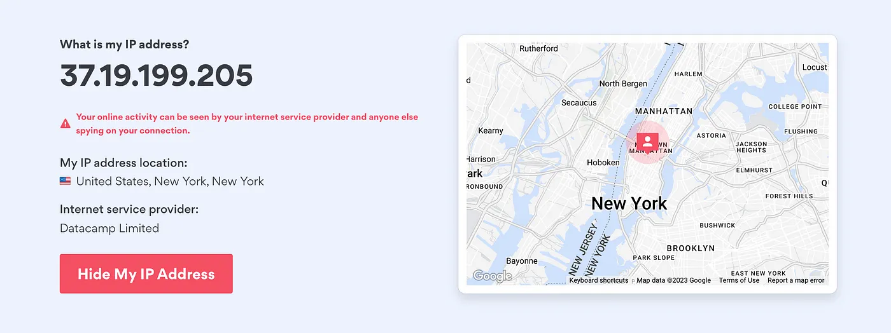
You Can See Which ISP Your Public IP Address Belongs to And The Machine’s Location Using It
How you can learn about your public IP address is a bit tricky. There is no proper Linux way, because the public IP is not stored directly on your machine. It is stored in either your router, your modem or some other special device (AKA your NAT device).
The below command is one of the popular ways that you can learn your public IP address.
# 'curl' is a command that is used to transfer/retrieve data from URLs
$ curl ifconfig.co
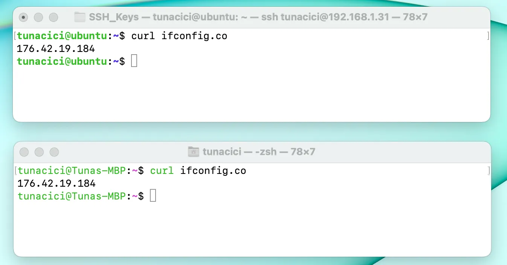
Both of my Devices Has The Same Public IP Address (Because NAT)
Every device on your local network shares the same public IP address. For example; your laptop, iPhone and your TV all has the same public IP address. So, if your sister gets IP banned from League of Legends, then you will be banned too (because you both have the same public IP).
Ping
Now, before we go any further with IP addresses, I would like to introduce the term ‘pinging’. Pinging is a way of testing if two devices can talk to each other on a network using their IP address.
The below command sends packages to the destined address. If it is successful, then you know the two machines are connected!
$ ping <DESTINATION_IP>
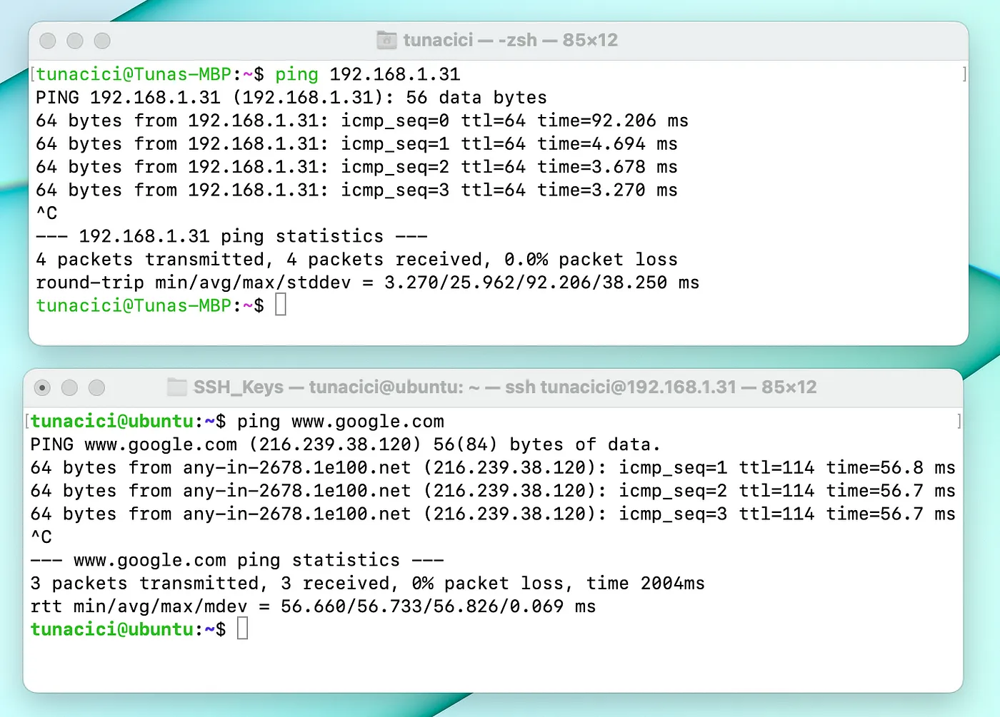
Pinging my Raspberry Pi (Private IP) — Pinging Google (Public IP)
I was able to ping Google without specifying it’s public IP address, because my machine was using a DNS.
All we need to know about DNS right now is that the it converts a human readable address (www.google.com) into a computer readable (216.239.38.120) address. In our cace, it’s the same thing as pinging 216.239.38.120
How Can We Change IP Addresses? — Private & Public
Okay, we know about IP addresses now. Let’s try to learn how to use them. First things first, here is a popular term you’ve definietly heard before: assigning an IP address. What does it mean? And what’s the difference between assigning and changing an IP address?
Assigning an IP address means that you are adding a new IP address.
Changing your IP address means that you are replacing the currently used IP address with a new one.
The important thing you should know here is that you can have more than one IP address by assigning. (depending on your OS&Hardware ofc.)
Now, both your private and public IP can be changed either statically or dynamically. You can also assign new ones to both!
Static IP Adddress
Static IP address means that your IP address will not change over time and is kept… well, static. This is the most basic and trivial way to use an IP address.
Assigning a new private IP address in Linux is done via using the ‘ip’ command. Let’s see it.
$ ip addr add <IP>/<NETMASK> dev <INTERFACE>
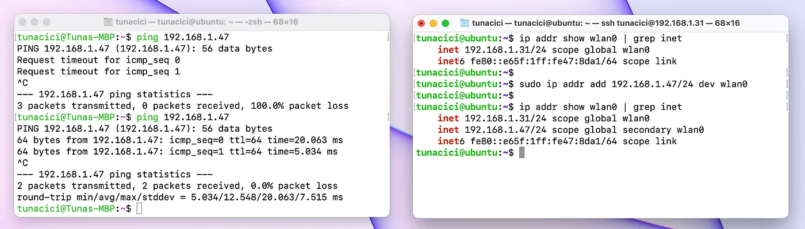
Pinging The New 192.168.1.47 (Left) — Assigning 192.168.1.47 (Right)
Check out the above image. You can see that before I assigned the new IP address: 192.168.1.47, I was not able to ping it. However, after using the ‘ip addr add’ command, I succesfully pinged it. Meaning, the new IP works!
Also note that, I have two IP addresses (see the right terminal). This means I can use multiple IP addresses on a single network interface.
You can also delete an IP address. Check out the command below.
$ ip addr del <IP>/<NETMASK> dev <INTERFACE>
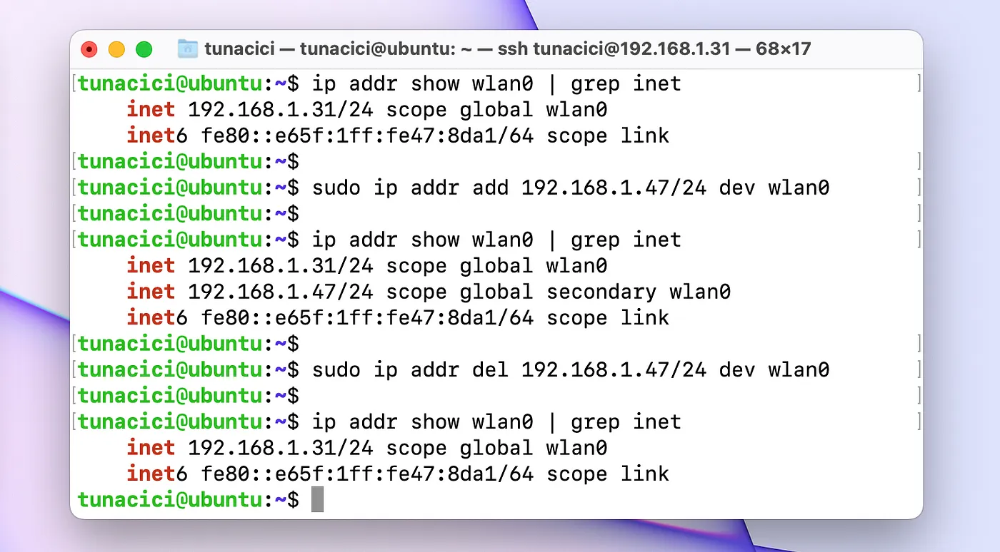
My IP is Gone, Reduced to Ashes
You can probably starting to see that by assigning a new IP address and then deleting the old one, I can changed my IP address. This is the ‘modern Linux’ way to change an IP address: by adding a new on and deleting the old one.
Now that we know how to assign&change our private IP address, let’s learn how to do the same in the public domain (or don’t).
IP Addresses Can be Confusing — Source: devRant.com
Assigning a new public IP address is a bit tricky. You can’t assign a new public IP as easy as using a simple Linux command. You need to buy static IP from your ISPs or use third party services.
You can’t technicallly ‘buy’ an public IP address because they are public resources, which are managed by big authorities.
Below are a few ways you can metaphorically ‘change’ your static public IP address.
- Contacting your ISP. (You need to ‘buy’ one from them)
- Buying a DNS service (This is rather a workaround using hostnames)
- Buying/Using a VPN (Again, a workaround that uses ‘NAT technics’)
NordVPN is One of The Few Services That Provides Static/Dedicated IP
Dynamic IP Address
Dynamic IP address means that your IP can change over time. This means that one day you might be using 192.168.1.5 and the other day 192.168.1.43.
Since, dynamic IP addresses changes over time, someone needs to keep track of all available IP addresses and assign them. Who is that someone? A friend called DHCP.
Both private networks and public networks can use a DHCP server to assign dynamic IP addresses.
A DHCP is a must-have in order to assign IP addresses dynamically.
DHCP
Dynamic Host Configuration Protocol (DHCP), is a software program who is responsible for giving (assigning) IP addresses to devices in the network.
When a device connects to a network, it sends a broadcast message requesting an IP address. The DHCP server, which generally runs on a router or a dedicated server, receives the request and assigns an available IP address to the device.
Most modern router’s have DHCP servers built inside them. You can check your’s by going into your router’s configuration page (mostly by typing 192.168.1.1 into a web browser).
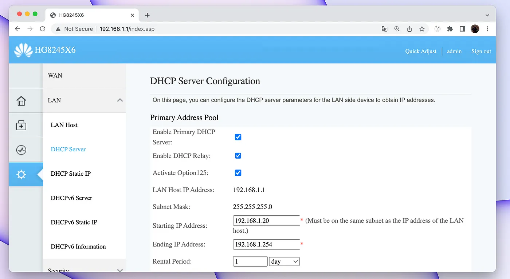
My Router’s DHCP Settings Page
You can see that I can configure my DHCP server. For example, I can set the range of IP addresses to be given to devices. Or my ‘rental period’, which basically means when to release unused IP addresses and make them available for others to use.
DHCP Servers Are Pretty Generous When You Think About it — Source: mememaker.com
DHCP servers are really powerful. You can use a DHCP server to give you a dynamic IP address, and also set your IP address statically via the ‘ip addr’ command. But there is a better way to make your IP static via dedicating it.
You can dedicate an IP address to you and only you when using a DHCP server. All you need to do is: associate your MAC address with the IP address you want in your router’s configuration page.
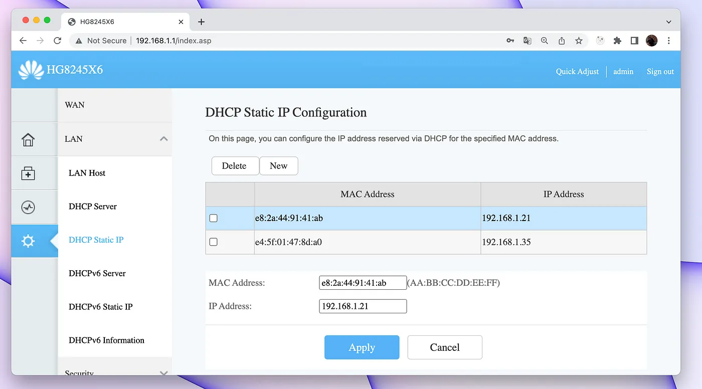
Here I Can Get a Dedicated IP Via my MAC Address
And, if you want to dynamically change your public IP address too, then you are in luck! Because you don’t have to do anything. Your ISP will give you a new public IP address every time you restart your router/modem. They can also randomly change your public IP.
Bad news. No one exactly knows when an ISP will give you a new public IP. Since, public IP addresses are limited, they will release and give you a new IP whenever they need/want to.
Closing Words
In this part, we have learned more about IP addresses such as what they are for and different protocols (IPv4 vs IPv6). The legacy IPv4 protocol showed us that it was alone not enough to support modern Internet, thus leading us to NAT. While talking about the NAT, we learned what a private and a public IP address is and the differences between them.
Lastly, we have talked about different ways to assign new IP addresses in Linux. These are being the static (using the ‘ip’ command) and dynamic (using router’s DHCP server).
In the next part we will dive into the software side of networking. Mainly I will be talking about ports, firewalls & route tables.
I hope that you liked my article and learned something new. If you spot any errors or mistakes please, do let me know.
Take care ❤

Thanks for reading & Take care ❤
Follow me on X (formerly Twitter), if you like my works that is >.<